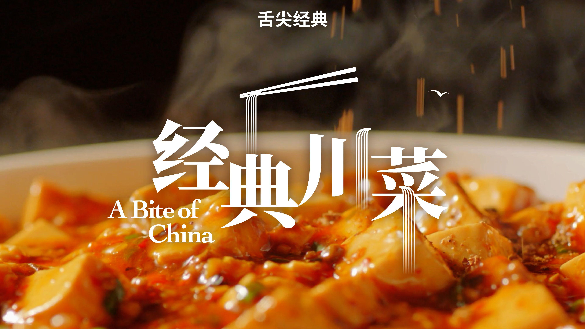
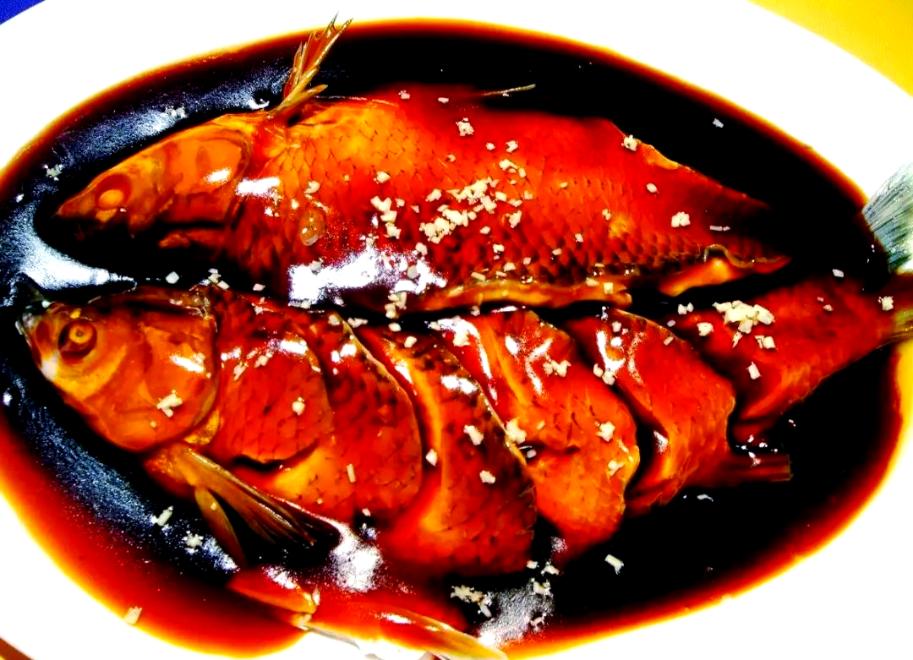

美食制作视频
观看名厨现场制作，学习地道烹饪技巧

川菜制作：麻婆豆腐
《舌尖上的中国》经典川菜制作过程，展现麻辣鲜香的烹饪艺术。

粤菜制作：白切鸡
学习制作正宗广式白切鸡，体验粤菜追求原汁原味的烹饪哲学。

浙菜制作：西湖醋鱼
展示浙菜经典西湖醋鱼的制作过程，体验南方菜系的烹饪技艺。
中华美食地图
点击地图上的标记，探索各地特色美食
美食地理分布
中国地域广阔，不同地区的气候、物产和饮食习惯形成了各具特色的地方菜系。从东北的炖菜到西南的辣味，从沿海的海鲜到内陆的山珍，每一种美食都是当地文化与自然的结晶。
点击地图上的标记点，可以了解该地区的特色美食及其背后的文化故事。
区域特色
- 西南地区：麻辣鲜香
- 东南沿海：海鲜为主
- 北方地区：面食丰富
- 江南地区：精致细腻
四川 - 麻辣火锅
广东 - 广式早茶
江苏 - 扬州炒饭